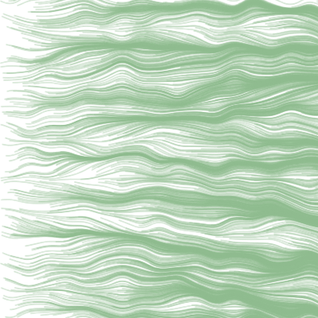
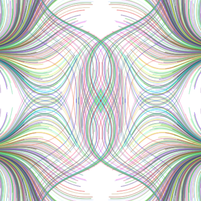

This project uses a noise function within a spork drawing to create seemingly organic images.
HAIR
This example uses noise to create a pattern that looks sort of like hair, but probably cooler.
WAVES

This example uses the same function, but the angle is changed so the lines move fairly horizontally. I also increased the amount of noise for more bends in each line.
SYMMETRY

This example uses the same basic setup as the other two examples, except it uses rotations and reflections to create a symmetrical image. I also added a random color function for extra fun.